|
Platform Changes
|
|
Platform test framework support for JUnit 4
|
The platform's automated testing framework now supports running tests with JUnit 4.
The test framework previously only allowed running with JUnit version 3.
|
| Headless external tool builders |
Launching support for Ant and external tools is provided by the new headless plug-ins
org.eclipse.ant.launching and org.eclipse.core.externaltools.
This allows applications without a user interface to leverage the launch support programmatically
and it allows projects configured with external tool builders to be built in headless
environments.
|
| Event admin added |
The OSGi event admin specification provides
a general purpose event bus for posting and sending events to event
handlers. The Equinox event admin implementation has been
added to the platform feature. |
| Help UI extensibility |
New extension points allow additional buttons and
frames to be added to the help web application. In the image below the title search frame,
the rightmost button and the frame below the content page are all contributed.
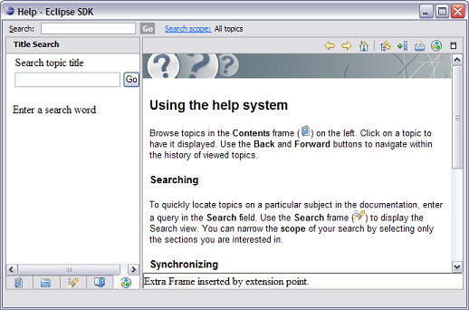
|
| Scoping by criteria in help system |
The help web application now allows the table of contents, the
index and the search results to be filtered by book/topic or by criteria. Criteria are defined in
the table of contents or using the extension point org.eclipse.help.criteriaDefinition. The list of
displayed criteria is defined at the product level. Products which do not define criteria (including
the Eclipse SDK) will not show any UI for criteria.
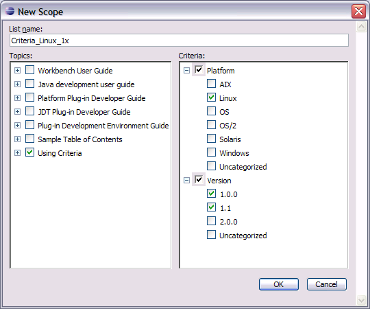
|
| Sorting help topics. |
A new attribute "sort" has been added to the <toc> and
<topic> elements in a table of contents which causes subtopics to be sorted alphabetically when
the value is set to "true". |
| See entries in keyword index |
See entries can now be added to the help system keyword index.
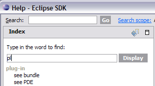
|
| Extension point for help search |
A new extension point org.eclipse.help.base.searchParticipant
has been added. This allows clients to add documents not in the html or xhtml format to the search
index used by the help system. This should be used in place of the deprecated extension point
org.eclipse.help.base.luceneSearchParticipants which is not binary compatible across Lucene versions.
|
|
Equinox
|
| Multi-locale support in extension registry |
The Equinox extension registry now supports running
in a multi-locale mode. When running in this mode, translated extension attributes can be
obtained for any locale, whereas they were previously only available for the system's
current locale. Multi-locale mode is enabled via the -registryMultiLanguage
command line argument, or by setting the Java system property eclipse.registry.MultiLanguage=true.
The registry also uses a new LocaleProvider service for
obtaining the locale for a given execution context. This allows a system to provide
an alternative mechanism for computing the current locale, rather than using the
singleton locale defined by the Java runtime environment.
|
| New Equinox weaving feature |
The byte code weaving work in the Equinox incubator has passed the
graduation review and the major parts of the work are now part of the Equinox distribution.
Equinox Weaving provides a general infrastructure for load-time byte code
weaving for the Equinox OSGi runtime. Currently Equinox Weaving includes
a weaver for AspectJ to load-time weave aspects into bundles (AspectJ Development Tools and
the Scala IDE for Eclipse already use this to realize deeper integration
with the Eclipse Java development tools, for example).
These four bundles are contained in the distribution:
- org.eclipse.equinox.weaving.hook: The framework extension project
containing the hooks to insert byte code weaving and caching at
load-time.
- org.eclipse.equinox.weaving.aspectj: Contains the bridge to use
AspectJ as load-time weaving implementation.
- org.eclipse.equinox.weaving.caching: Provides caching for woven
byte code for standard Java virtual machines.
- org.eclipse.equinox.weaving.caching.j9: Contains an alternative
cache implementation that uses IBM J9 VM shared classes for caching woven
classes.
|
| Multi-session Equinox console |
The Equinox console has been enhanced to
allow multiple console sessions to be connected. Previous versions of the
Equinox console would only allow a single session to be connected at a time.
The console only allowed for connections from two built connection types,
through standard in/out or though a telnet port.
A new service interface has been introduced:
org.eclipse.osgi.framework.console.ConsoleSession.
Implementers of a console session register themselves as an OSGi service.
The console implementation will then automatically use the console session
for input and output of a console connection.
|
| Revert support in p2 director |
The p2 director application now supports reverting
to an earlier profile state from the command line. Use the new -revert
argument to specify a previous profile state to revert to.
|
|
SWT Changes
|
| Icon support for GTK Text widgets |
The text widget can now display the search and cancel icons inside the widget. This runs on Linux platforms with a GTK version of 2.16 or greater.
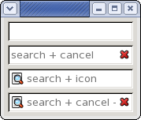
|
| Mozilla browser support on Solaris SPARC |
Mozilla browser support has been added for the Solaris SPARC platform (Solaris 10, GTK+). |
| Browser closing API |
The new API method Browser.close() is used to
close a browser, but allows the close to be cancelled by an onbeforeunload handler.
See Snippet 326.
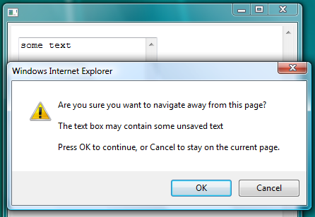
|
| Key events for F16-F20 |
New key event constants have been added for the keyboard function keys F16 to F20. |
| DND insertion feedback for tables |
The default drop target effect for Table now supports DND.FEEDBACK_INSERT_BEFORE
and DND.FEEDBACK_INSERT_AFTER.
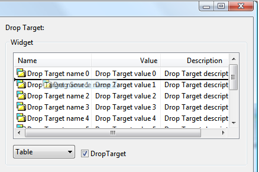
|
| Horizontal mouse wheel |
New event constants have been added for horizontal
mouse wheels. See SWT.MouseHorizontalWheel and SWT.MouseVerticalWheel. |
| Variable tab stops in StyledText |
New API in StyledText allows the application to specify a non-uniform sequence of tab stops.
See Snippet 325.
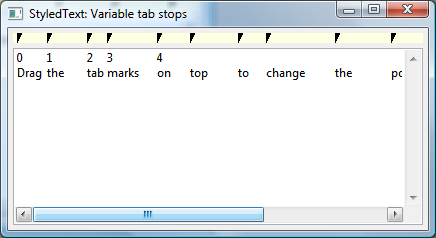
|
|
StyledText: per line variable tab stops
|
Tab stop support in StyledText has been improved to allow each line to have its own sequence of tab stops.
Snippet 328
has been modified from Snippet325 to show this.
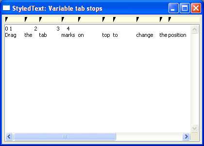
|
| CLabel set/get margins |
New API has been added to CLabel to set and get the left, top, right and bottom margin spacing.
|
|
Key location
|
A new field has been added to KeyEvent to allow the application
to identify which keyboard key originated the event, for example, right or left shift key.
See KeyEvent.keyLocation for details.
|
|
New API in Scrollbar
|
New methods have been added to Scrollbar to return the bounds for the thumb and its track.
See ScrollBar.getThumbBounds() and ScrollBar.getThumbTrackBounds().
|
|
State mask for selection events
|
SelectionEvent.stateMask is now set on selection and default selection events for all native controls.
|
|
Orientation event
|
A new event has been added to Text, Combo, and StyledText. It is sent when the writing direction is changed via keyboard shortcut.
See SWT.OrientationChanged
|
| Browser.setUrl() can specify post data and headers |
The new API Browser.setUrl(String url, String postData, String[] headers) allows clients
to include post data and add/override header values when initiating HTTP requests. See
Snippet 330 for an example.
|
|
Wrap indent in StyledText
|
StyledText and TextLayout now offer API to allow the application
to control the amount of indent space for wrapped lines.
See Snippet 331.
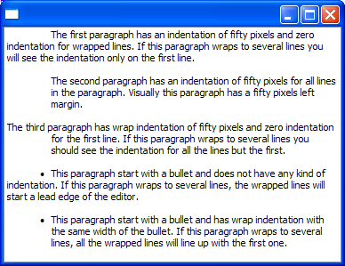
|
|
Improved bidi segments support
|
The bidi segments support in StyledText and TextLayout was changed
to allow the application to specify which Unicode Control Characters to use in the segments boundaries.
See Snippet 332.
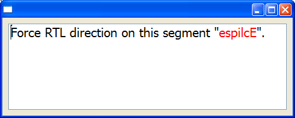
|
|
Right-to-Left text support on Cocoa
|
On Cocoa, setting the SWT.RIGHT_TO_LEFT flag changes the default text reading direction to right to left.
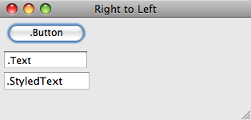
|
|
Skin engine support
|
New API added to allow CSS engines to skin widgets at the appropriate time
(See SWT.Skin and Widget.reskin(int)). For more info see
Snippet 333.
|
|
New layout API
|
New API added to Composite to support automatic deferred layout.
See Composite.layout(Control[], int).
|
|
Browser.setText() can restrict content permissions
|
New Browser API setText(String html, boolean trusted) allows clients to
restrict the permissions that are given to Browser content that is set from a String.
Restricting permissions is suggested when the source of the content is not trusted.
|
|
Accessibility upgrade
|
SWT Accessibility has new API for making applications more accessible to Assistive
Technology products such as screen readers.
Snippet 334 shows a simple custom text control with enhanced text accessibility.
|
|
SWT.OpenDoc Event
|
A new event type has been added to SWT to notify applications that a document
should be opened. Listeners for OpenDoc events can be added to a Display.
Support has also been added to the Equinox launcher, and the Eclipse workbench.
Users are now able to associate file types with Eclipse and have Eclipse launched when
they open a file of an associated type.
|
|
Program working directory
|
New API has been added to Program to allow the working directory to be
specified when launching an executable. See Program.launch(String fileName, String workingDir) for more details.
|
|
XULRunner 1.9.2 support
|
The Browser widget now has full support for the recent release of XULRunner 1.9.2.
|
|
TaskItem overlay image
|
The new API TaskItem#setOverlayImage(Image) allows clients to set an image to be displayed on top of the application button in the taskbar.
See Snippet 336 for an example.
|
|
TaskItem overlay text
|
The new API TaskItem#setOverlayText(String) allows clients to set a short text to be displayed on top of the application button in the taskbar.
See Snippet 336 for an example.
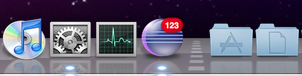
|
|
TaskItem progress
|
The new APIs TaskItem#setProgress(int) and TaskItem#setProgressState(int) allows clients to show progress indication in the application button in the taskbar.
See Snippet 336 for an example.
|
|
TaskItem menu
|
The new API TaskItem#setMenu(Menu) allows clients to specify a menu for the application button in the taskbar.
Running on Windows 7:
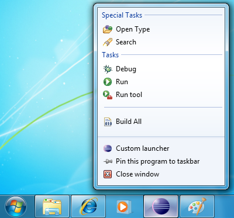
Running on Mac OS X:
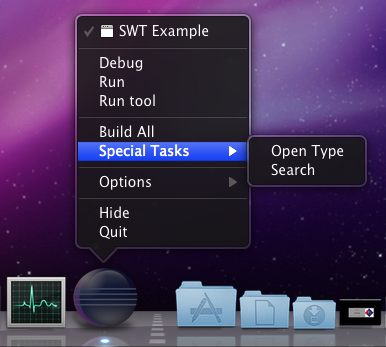
|
|
CTabFolder renderer
|
CTabFolder has been improved and now allows clients to change its look by implementing their own renderers.
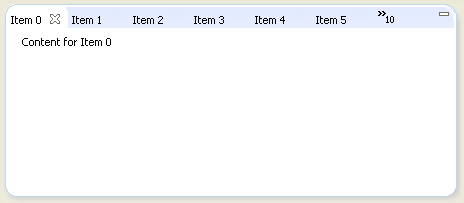
|
|
Custom traversals
|
New API Control.traverse(int, event) enables clients to request that a customized traversal be performed. For an example of this see
Snippet 338.
|
|
Draw background at an offset
|
New API was added in Composite.drawBackground that allows for drawing of a parent background at an offset specified by the child. This
is useful for aligning patterns between the parent and child when dealing with non-rectangular shapes.
|